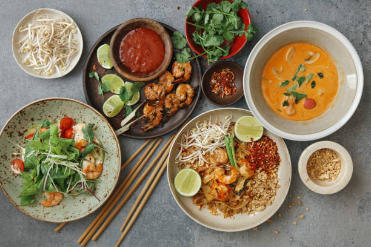

Indulging in Thai Street Food Delights
Experience Thailand through its food. This post takes you on a culinary journey, from street food stalls to high-end restaurants.
Embark on a culinary adventure through the bustling streets of Thailand, where every corner offers a new opportunity to tantalize your taste buds. From the fragrant noodle soups of Bangkok's night markets to the fiery curries of Chiang Mai, Thai street food is a celebration of bold flavors and vibrant ingredients. Join us as we explore the diverse culinary landscape of Thailand, one bite at a time..
In Thailand, every bite is an explosion of flavors—a symphony of sweet, sour, spicy, and savory that dances on your palate.
Step into the world of haute cuisine as we visit Thailand's most prestigious dining establishments. From innovative fusion dishes to traditional recipes prepared with meticulous precision, these Michelin-starred restaurants offer a glimpse into the sophisticated side of Thai gastronomy. Indulge in exquisite tasting menus, expertly crafted cocktails, and impeccable service as we elevate our culinary journey to new heights.
Immerse yourself in the culinary heritage of Thailand as we learn about the traditional techniques and ingredients that have shaped its cuisine. From the delicate balance of flavors in classic dishes like pad Thai and green curry to the intricate art of fruit carving, Thai culinary traditions are as diverse and vibrant as the country itself. Join us as we delve into the roots of Thai cooking and discover the secret behind its world-renowned flavors.